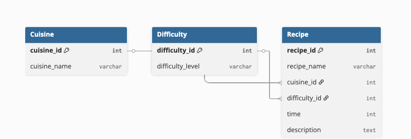

Team Members
- Shivani Jagannatham Frontend Lead
- Rishika Katna Data Visualization
- Revanth Malisetty Chatbot & CRUD
- Praneeth Venkata Sai Eluri Documentation & Modeling
Logical Data Model
Figure 1: Logical Data Model for the CookBook Web Application
Figure 1: Logical Data Model for the CookBook Web Application